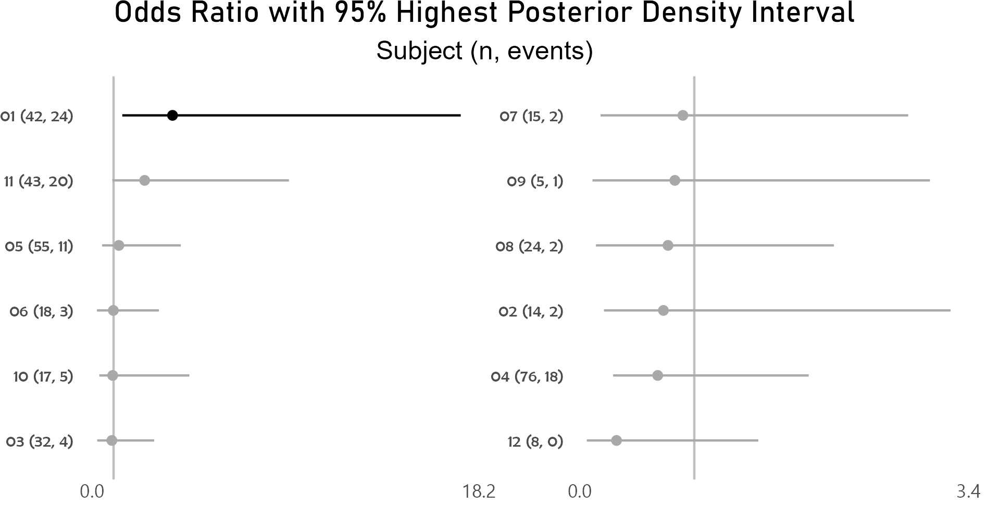
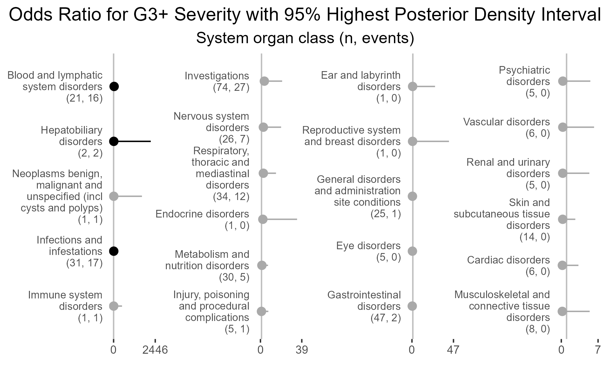

4.3 Examples
4.3.1 A wrapper for the as.numeric function. Prints entries that fail to parse instead of throwing uninformative error
library(BiostatsUHNplus);
z <- as_numeric_parse(c(1:5, "String1",6:10,"String2"))
#> The following entries were converted to NA values:
#> Entry 6, 'String1'
#> Entry 12, 'String2'
z
#> [1] 1 2 3 4 5 NA 6 7 8 9 10 NA4.3.2 Nested summary of adverse events by participant in cohort, stratified by attribution to first study drug
Uses addendum simulated study data and applies variable labels. Interpret summary output and unnested or nested p-value with caution!
Note that if participants were enrolled in more than one cohort (crossover), or if repeat AEs in participant had different attribution, the total N for Full Sample will be less than that of the total N of attribution for first study drug. Since total N for Full Sample (234) is less than total N of the first study drug attribution categories (49 + 198), this suggests that there was instances of repeat AEs in participants having different attribution to first study drug.
library(plyr);
library(BiostatsUHNplus);
data("enrollment", "demography", "ineligibility", "ae");
clinT <- plyr::join_all(list(enrollment, demography, ineligibility, ae),
by = "Subject", type = "full");
clinT$AE_SEV_GD <- as.numeric(clinT$AE_SEV_GD);
clinT$Drug_1_Attribution <- "Unrelated";
clinT$Drug_1_Attribution[clinT$CTC_AE_ATTR_SCALE %in%
c("Definite", "Probable", "Possible")] <- "Related";
clinT$Drug_2_Attribution <- "Unrelated";
clinT$Drug_2_Attribution[clinT$CTC_AE_ATTR_SCALE_1 %in%
c("Definite", "Probable", "Possible")] <- "Related";
lbls <- data.frame(c1=c("AE_SEV_GD", "ENROL_DATE_INT", "COHORT", "GENDER_CODE",
"INELIGIBILITY_STATUS", "AE_ONSET_DT_INT", "Drug_2_Attribution", "ae_category"),
c2=c("Adverse event severity grade", "Enrollment date", "Cohort", "Gender",
"Ineligibility", "Adverse event onset date", "Attribution to second study drug",
"Adverse event system organ class"));
clinT <- reportRmd::set_labels(clinT, lbls);
rm_covsum_nested(data = clinT, id = c("ae_detail", "Subject", "COHORT"),
covs = c("COHORT", "GENDER_CODE", "INELIGIBILITY_STATUS", "ENROL_DATE_INT",
"AE_SEV_GD", "Drug_2_Attribution", "AE_ONSET_DT_INT", "ae_category"),
maincov = "Drug_1_Attribution");| Full Sample (n=234) | Related (n=49) | Unrelated (n=198) | Unnested p-value | Unnested Effect Size | Unnested StatTest | Nested p-value | |
|---|---|---|---|---|---|---|---|
| Cohort | 0.65 | 0.081 | Chi Sq, Cramer’s V | 0.95 | |||
| Cohort A | 59 (25) | 13 (27) | 49 (25) | ||||
| Cohort B | 83 (35) | 14 (29) | 74 (37) | ||||
| Cohort C | 37 (16) | 10 (20) | 30 (15) | ||||
| Cohort D | 55 (24) | 12 (24) | 45 (23) | ||||
| Gender | 0.14 | 0.093 | Chi Sq, Cramer’s V | 0.63 | |||
| Female | 51 (22) | 15 (31) | 39 (20) | ||||
| Male | 183 (78) | 34 (69) | 159 (80) | ||||
| Ineligibility | Chi Sq, Cramer’s V | ||||||
| No | 215 (100) | 46 (100) | 181 (100) | ||||
| Missing | 19 | 3 | 17 | ||||
| Enrollment date | Wilcoxon Rank Sum, Wilcoxon r | ||||||
| Mean (sd) | 2017-01-07 (301.8 days) | 2017-01-31 (322.7 days) | 2016-12-28 (294.3 days) | ||||
| Median (Min,Max) | 2016-09-14 (2016-01-18, 2018-05-16) | 2017-02-07 (2016-01-18, 2018-05-16) | 2016-09-14 (2016-01-18, 2018-05-16) | ||||
| Adverse event severity grade | 0.12 | 0.098 | Wilcoxon Rank Sum, Wilcoxon r | 0.97 | |||
| Mean (sd) | 1.8 (0.8) | 2.0 (0.9) | 1.7 (0.8) | ||||
| Median (Min,Max) | 1.5 (1.0, 5.0) | 2 (1, 4) | 1.5 (1.0, 5.0) | ||||
| Attribution to second study drug | <0.001 | 0.55 | Chi Sq, Cramer’s V | <0.001 | |||
| Related | 37 (16) | 28 (57) | 11 (6) | ||||
| Unrelated | 197 (84) | 21 (43) | 187 (94) | ||||
| Adverse event onset date | Wilcoxon Rank Sum, Wilcoxon r | ||||||
| Mean (sd) | 2017-11-03 (161.1 days) | 2017-10-01 (146.6 days) | 2017-11-10 (161.2 days) | ||||
| Median (Min,Max) | 2017-10-05 (2016-05-02, 2019-01-13) | 2017-09-07 (2017-03-18, 2018-11-24) | 2017-10-15 (2016-05-02, 2019-01-13) | ||||
| Adverse event system organ class | 0.003 | 0.42 | Chi Sq, Cramer’s V |
Did not converge; quasi or complete category separation |
|||
| Blood and lymphatic system disorders | 15 (6) | 6 (12) | 10 (5) | ||||
| Cardiac disorders | 6 (3) | 0 (0) | 6 (3) | ||||
| Ear and labyrinth disorders | 1 (0) | 0 (0) | 1 (1) | ||||
| Endocrine disorders | 1 (0) | 1 (2) | 0 (0) | ||||
| Eye disorders | 4 (2) | 0 (0) | 4 (2) | ||||
| Gastrointestinal disorders | 32 (14) | 16 (33) | 22 (11) | ||||
| General disorders and administration site conditions | 19 (8) | 1 (2) | 18 (9) | ||||
| Hepatobiliary disorders | 2 (1) | 0 (0) | 2 (1) | ||||
| Immune system disorders | 1 (0) | 0 (0) | 1 (1) | ||||
| Infections and infestations | 15 (6) | 5 (10) | 13 (7) | ||||
| Injury, poisoning and procedural complications | 4 (2) | 1 (2) | 4 (2) | ||||
| Investigations | 34 (15) | 12 (24) | 23 (12) | ||||
| Metabolism and nutrition disorders | 25 (11) | 3 (6) | 22 (11) | ||||
| Musculoskeletal and connective tissue disorders | 7 (3) | 0 (0) | 7 (4) | ||||
| Neoplasms benign, malignant and unspecified (incl cysts and polyps) | 1 (0) | 0 (0) | 1 (1) | ||||
| Nervous system disorders | 20 (9) | 3 (6) | 18 (9) | ||||
| Psychiatric disorders | 4 (2) | 0 (0) | 4 (2) | ||||
| Renal and urinary disorders | 5 (2) | 0 (0) | 5 (3) | ||||
| Reproductive system and breast disorders | 1 (0) | 0 (0) | 1 (1) | ||||
| Respiratory, thoracic and mediastinal disorders | 19 (8) | 1 (2) | 18 (9) | ||||
| Skin and subcutaneous tissue disorders | 13 (6) | 0 (0) | 13 (7) | ||||
| Vascular disorders | 5 (2) | 0 (0) | 5 (3) |
4.3.3 Outputs three DSMB-CCRU AE summary tables in Excel format per UHN template
Uses addendum simulated study data. DSMB-CCRU AE summary tables in below code example can be found in the man/tables folder of BiostatsUHNplus package.
library(BiostatsUHNplus);
data("enrollment", "demography", "ineligibility", "ae");
## This does summary for all participants;
dsmb_ccru(protocol="EXAMPLE_STUDY",setwd="./man/tables/",
title="Phase X Study to Evaluate Treatments A-D",
comp=NULL,pi="Dr. Principal Investigator",
presDate="30OCT2020",cutDate="31AUG2020",
boundDate=NULL,subjID="Subject",subjID_ineligText=c("New Subject","Test"),
baseline_datasets=list(enrollment,demography,ineligibility),
ae_dataset=ae,ineligVar="INELIGIBILITY_STATUS",ineligVarText=c("Yes","Y"),
genderVar="GENDER_CODE",enrolDtVar="ENROL_DATE_INT",ae_detailVar="ae_detail",
ae_categoryVar="ae_category",ae_severityVar="AE_SEV_GD",
ae_onsetDtVar="AE_ONSET_DT_INT",ae_detailOtherText="Other, specify",
ae_detailOtherVar="CTCAE5_LLT_NM",ae_verbatimVar="AE_VERBATIM_TRM_TXT",
numSubj=NULL)
## This does summary for each cohort;
dsmb_ccru(protocol="EXAMPLE_STUDY",setwd="./man/tables/",
title="Phase X Study to Evaluate Treatments A-D",
comp="COHORT",pi="Dr. Principal Investigator",
presDate="30OCT2020",cutDate="31AUG2020",
boundDate=NULL,subjID="Subject",subjID_ineligText=c("New Subject","Test"),
baseline_datasets=list(enrollment,demography,ineligibility),
ae_dataset=ae,ineligVar="INELIGIBILITY_STATUS",ineligVarText=c("Yes","Y"),
genderVar="GENDER_CODE",enrolDtVar="ENROL_DATE_INT",ae_detailVar="ae_detail",
ae_categoryVar="ae_category",ae_severityVar="AE_SEV_GD",
ae_onsetDtVar="AE_ONSET_DT_INT",ae_detailOtherText="Other, specify",
ae_detailOtherVar="CTCAE5_LLT_NM",ae_verbatimVar="AE_VERBATIM_TRM_TXT",
numSubj=NULL)
## Does same as above, but overrides number of subjects in cohorts;
dsmb_ccru(protocol="EXAMPLE_STUDY",setwd="./man/tables/",
title="Phase X Study to Evaluate Treatments A-D",
comp="COHORT",pi="Dr. Principal Investigator",
presDate="30OCT2020",cutDate="31AUG2020",
boundDate=NULL,subjID="Subject",subjID_ineligText=c("New Subject","Test"),
baseline_datasets=list(enrollment,demography,ineligibility),
ae_dataset=ae,ineligVar="INELIGIBILITY_STATUS",ineligVarText=c("Yes","Y"),
genderVar="GENDER_CODE",enrolDtVar="ENROL_DATE_INT",ae_detailVar="ae_detail",
ae_categoryVar="ae_category",ae_severityVar="AE_SEV_GD",
ae_onsetDtVar="AE_ONSET_DT_INT",ae_detailOtherText="Other, specify",
ae_detailOtherVar="CTCAE5_LLT_NM",ae_verbatimVar="AE_VERBATIM_TRM_TXT",
numSubj=c(3,4,3,3))4.3.5 Summary functions for MCMCglmm object with binary outcome
4.3.5.1 Model output for fixed effects
Below runs a logistic MCMCglmm model on the odds of grade 3 or higher adverse event, controlling for attribution of first and second intervention drugs. Subject and system organ class are treated as random effects. Model has 800 posterior samples. Should specify burnin=125000, nitt=625000 and thin=100 for 5000 posterior samples with lower autocorrelation. Aim for effective sample sizes of at least 2000.
data("ae");
ae$G3Plus <- 0;
ae$G3Plus[ae$AE_SEV_GD %in% c("3", "4", "5")] <- 1;
ae$Drug_1_Attribution <- "No";
ae$Drug_1_Attribution[ae$CTC_AE_ATTR_SCALE %in% c("Definite", "Probable", "Possible")] <- "Yes";
ae$Drug_2_Attribution <- "No";
ae$Drug_2_Attribution[ae$CTC_AE_ATTR_SCALE_1 %in% c("Definite", "Probable", "Possible")] <- "Yes";
prior2RE <- list(R = list(V = diag(1), fix = 1),
G=list(G1=list(V=1, nu=0.02), G2=list(V=1, nu=0.02)));
model1 <- MCMCglmm::MCMCglmm(G3Plus ~ Drug_1_Attribution + Drug_2_Attribution,
random=~Subject + ae_category, family="categorical", data=ae, saveX=TRUE,
verbose=F, burnin=2000, nitt=10000, thin=10, pr=TRUE, prior=prior2RE);
mcmcglmm_mva <- nice_mcmcglmm(model1, ae);
options(knitr.kable.NA = '');
knitr::kable(mcmcglmm_mva);| Variable | Levels | OR (95% HPDI) | MCMCp | eff.samp |
|---|---|---|---|---|
| Drug 1 Attribution | No | reference | ||
| Yes | 2.71 (1.01, 6.98) | 0.045 | 174.68 | |
| Drug 2 Attribution | No | reference | ||
| Yes | 0.45 (0.14, 1.27) | 0.170 | 158.52 |
4.3.5.2 Intraclass correlation coefficients
Most of the observed variation in grade 3 or higher adverse event status is attributable to adverse event category, also known as system organ class.
mcmcglmm_icc <- nice_mcmcglmm_icc(model1, prob=0.95, decimals=4);
options(knitr.kable.NA = '');
knitr::kable(mcmcglmm_icc);| ICC | lower | upper | |
|---|---|---|---|
| Subject | 0.0627 | 0.0057 | 0.3494 |
| ae_category | 0.7664 | 0.4568 | 0.9356 |
| units | 0.1258 | 0.0390 | 0.2490 |
4.3.5.3 Caterpillar plots of random effects - participant
After controlling for first and second drug attributions, subject 01 has a higher odds for grade 3 or higher adverse event than the average of study participants.
p <- caterpillar_plot(subjID = "Subject",
mcmcglmm_object = model1,
prob = 0.95,
orig_dataset = ae,
ncol = 2,
binaryOutcomeVar = "G3Plus")
ggplot2::ggsave(paste("man/figures/caterpillar_plot_subject", ".png", sep=""),
p, scale = 1.0, width=6.4, height=3.4, device="png");
4.3.5.4 Caterpillar plots of random effects - system organ class
Highest posterior density intervals, also known as credible intervals, are not symmetric. Need to run model for more iterations with higher burnin.
p <- caterpillar_plot(subjID = "ae_category",
mcmcglmm_object = model1,
prob = 0.95,
orig_dataset = ae,
ncol = 4,
binaryOutcomeVar = "G3Plus",
subtitle = "System organ class (n, events)",
title = "Odds Ratio for G3+ Severity with 95% Highest Posterior Density Interval",
fonts = c("Arial", "Arial", "Arial", "Arial"),
break.label.summary = TRUE)
ggplot2::ggsave(paste("man/figures/caterpillar_plot_ae_category", ".png", sep=""),
p, scale = 1.0, width=6.4, height=4.0, device="png");